Improving Graph Neural Networks with Structural Adaptive Receptive Fields
PDF: https://dl.acm.org/doi/10.1145/3442381.3449896
Conferences: WWW '21
1. Abstract
现有GNN模型未能充分利用图结构信息，此工作提出STructural Adaptive Receptive fields (STAR-GNN)，适应性地构建每个节点的感受野(receptive field)以捕获结构信息。具体贡献如下：
- 提出基于节点结构信息来自适应调节receptive field范围STAR-GNN；
- 将Anonymous Random Walks (ARWs)和互信息结合来捕获节点的结构信息，此外还提出针对receptive field的subgraph 聚合算子。
2. Motivations
大部分GNNs未能充分利用图结构信息，对邻居节点的重要性没有区分：
- 传统的GCN将邻居节点一视同仁，或者根据边权来分配权重，因而忽略了许多与邻居重要性有关的信息；
- GAT使用soft attention，基于节点特征的相似度来学习权重，但其，① 忽略拓扑特征的相似度信息，② soft attention在邻居数量较大时可能遭遇过平滑问题。
对此，希望能提出一种结合结构信息来适应性地构建节点receptive field的方法，该方法希望能 ①同时根据节点特征和结构特征来衡量邻居重要性，② receptive field聚合irregular neighborhoods 且避免过平滑问题。
遇到的挑战如下：
- 图复杂的结构信息难捕获；
- 适应性地构建receptive field计算复杂度高。该adaptive构建过程是不可微的，因而难直接优化。此前使用强化学习及组合优化的方式计算复杂度都过高；
- 不能基于k-order邻居来建立receptive field。理想的receptive field是不规则的子图，可能有数量各异的各阶邻居，现有聚合算子难有效聚合这样的子图结构。
3. Method
3.1 Overview
STAR-GNN主要分为3个部分：
- Local Structural Distribution，使用ARWs来捕获节点的邻居分布，结合Mutual Information(MI)来计算注意力，得到包含节点特征和结构信息的structural embedding；
- Construction of Optimal Receptive Fields，用structural embedding计算节点对间MI，贪心地寻找optima receptive field；
- GNN with Sub-graph Structures，通过采样不规则subgraph（receptive field）中节点，进行聚合。
3.2 Neighborhood Contributions Local Structural Distribution
Attention score 计算，过往一些方法基于节点特征相似度，一些则引入了人为设计的结构信息patterns，都只能捕获有限结构信息且泛化性不佳。
本工作则使用ARWs刻画节点的邻居结构特征，认为ARWs能较好地描述节点的local structural distribution。ARWs定义如下：
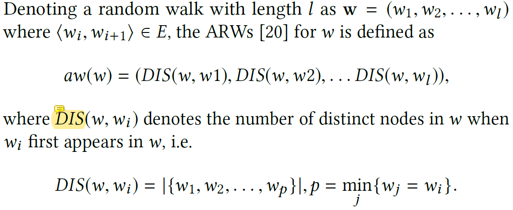
进一步地，本工作引入互信息(MI)来辅助学习节点embedding \(U={u_i}\)，希望最大化节点对间特征、结构信息。Loss设计有：
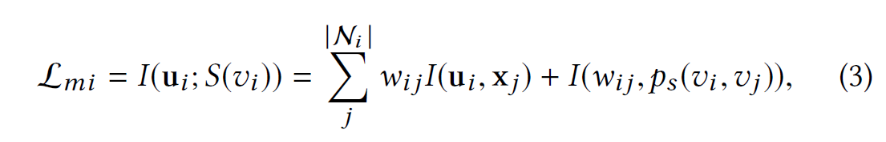
其中\(w_{i j}=\sigma\left(\mathbf{u}_{i}^{T} \mathbf{u}_{j}\right)\)，\(\mathcal{N}_{i}\)为节点\(i\)的ARWs中所访问到的节点集合，\(I(·, ·)\)为互信息，第一项衡量节点间特征相似度，第二项衡量结构相似度。
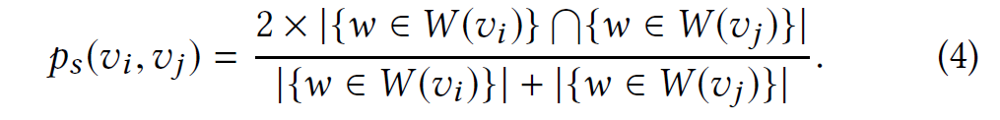
Attention score则由上述\(u\)计算，
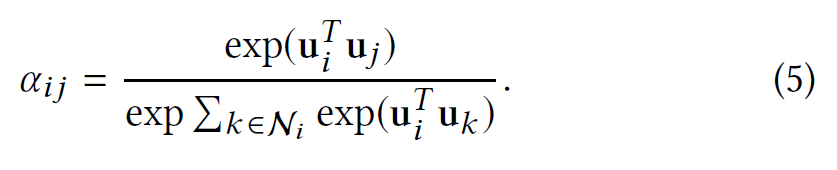
3.3 Construction of Optimal Receptive Fields
作者先前的工作说明GAT中的soft attention，在节点度较高时会遇到过平滑问题。因而构建receptive field时，应当“construct discrete adaptive receptive fields to avoid over-smoothing”(不是很理解，是否理解为需要筛选邻居，以减少聚合对象个数)。
作者认为，理想的receptive field应当为中心节点提供最多的信息，并希望用MI来衡量获取信息的多少。
因为MI≥0，故receptive field增大时MI和单调不减，故本工作将优化目标定为：以最小的receptive field取得满足阈值的MI：
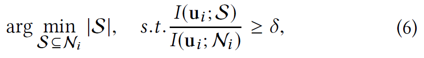
本工作使用贪心算法求解上述优化问题。
3.4 GNN with Sub-graph Structures
当前聚合算子如Mean, Max, LSTM针对k-hop邻居做聚合，对于不规则的subgraph，聚合时难以区分不同阶邻居信息。
本工作对如下聚合方式进行一系列证明，说明其满足permutation invariant。最后得到的聚合方式为：
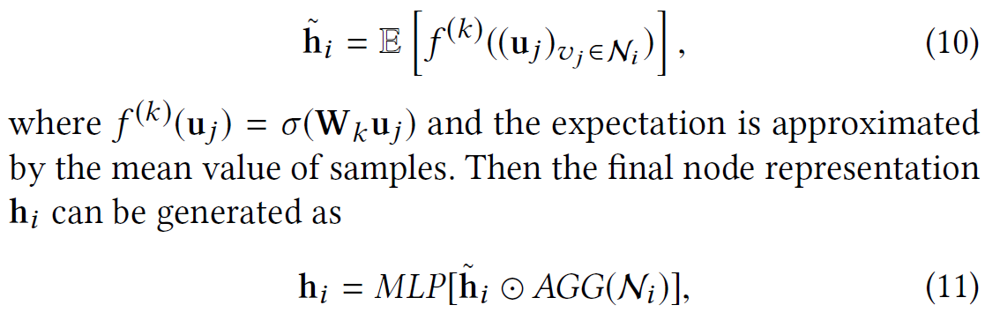
模型loss则为
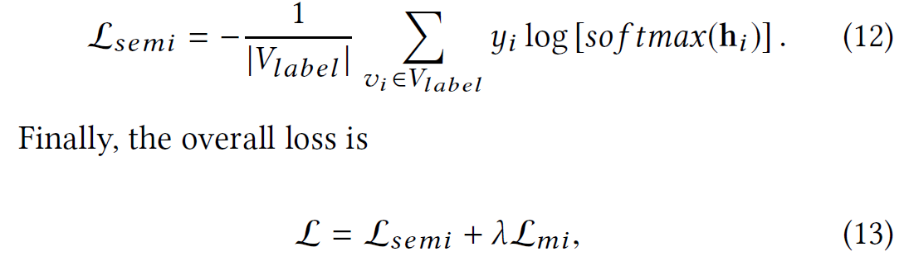
模型算法描述如下：
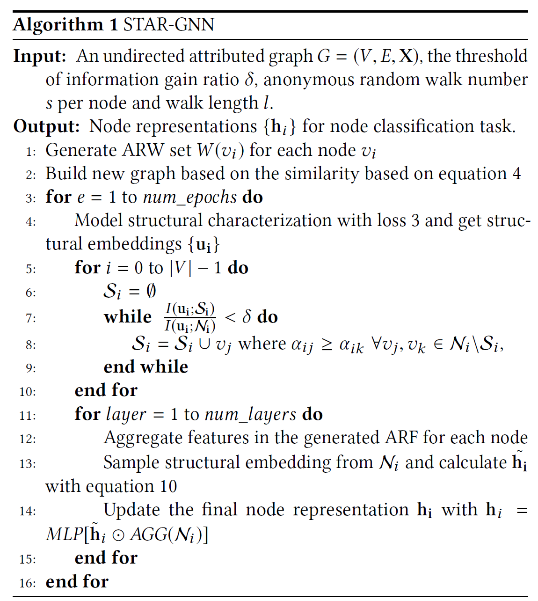
4. Exp
节点分类
- Transductive
- 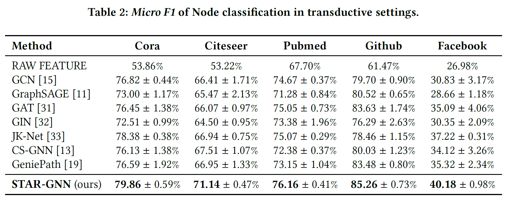
- Inductive
- 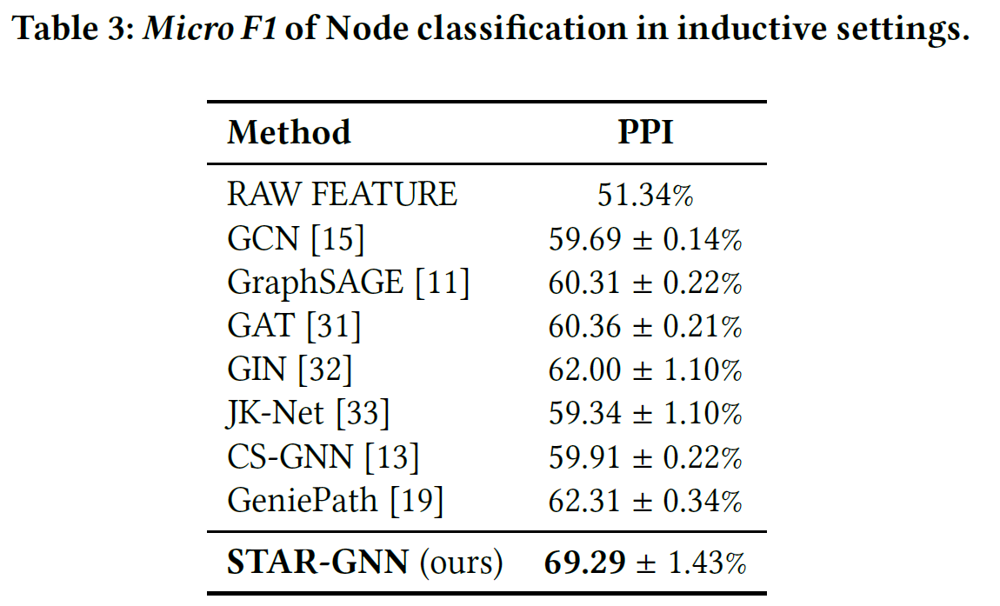
Ablation study
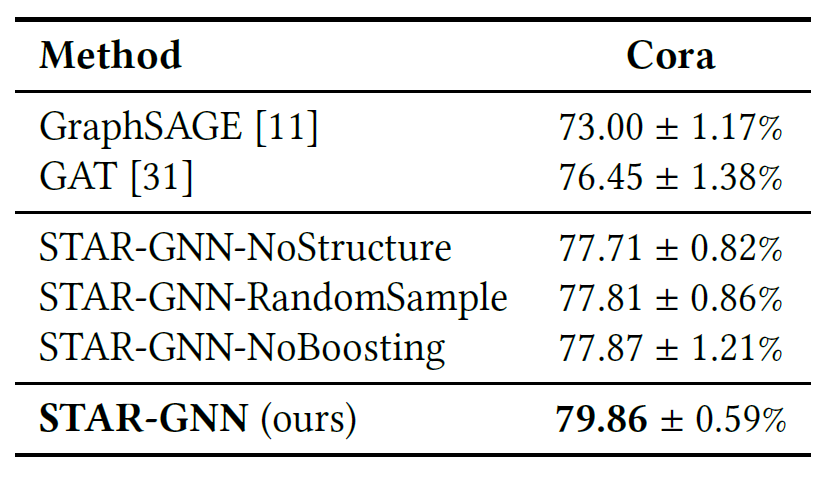
相对而言，引入结构信息和选择optimal receptive field对性能帮助更大。
5. Personal Thoughts
建模阶段：
- 在base node embedding阶段，用ARWs来刻画节点的local structure。RW-based方法implicit捕获拓扑结构，相较于explicit的子图挖掘，泛化性更好，对边缘节点等刻画更清晰，但未必能准确刻画cohesive subgraph等子图结构；
- （越看越奇怪，感觉没看懂）base node embedding依旧通过GNN在原图上(?)学习，不过在loss中加入MI构造的penalty，来捕获ARWs所刻画的结构信息，此处可算出attention scores，留给final embedding的聚合阶段使用；
- optimal receptive field通过MI+贪心算法构建。它们不在聚合阶段做邻居的筛选，而是将receptive field的构建前置，从而减少噪音，思路值得借鉴；
- final embedding由传统的邻居聚合+及\(\tilde{h_i}\)构成，\(\tilde{h_i}\)聚合了节点\(i\)的感受野信息。其聚合方法符合个人为实现子图聚合的想法——抽样聚合，提供了理论证明；
整体工作：
- 可以发现，本工作实际的编码器只有两个分离的GNN及若干MLP，主要工作在于adaptively调整编码器的输入；
- 亮点：
- MI的引入比较系统，从loss设计到optimal感受野的选择都结合了MI；
- 理论的证明和实验做得比较齐全，模型在数据集上的F1表现优异；
- 不足：
- 为得到final embedding，过程中产生较多冗余变量来调整模型输入，模型整体性略差。更理想来说，通过模型架构和penalty来自动选择感受野更为理想，贪婪算法整体性不强；
- 模型的推理速度堪忧。